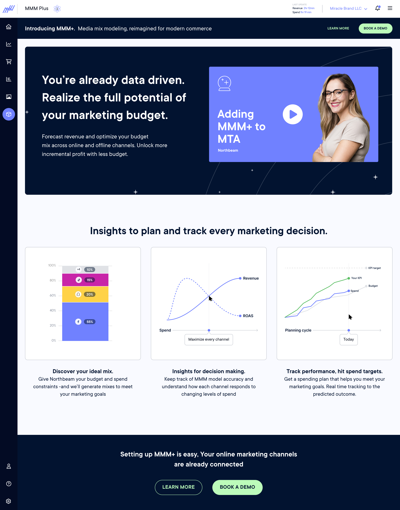
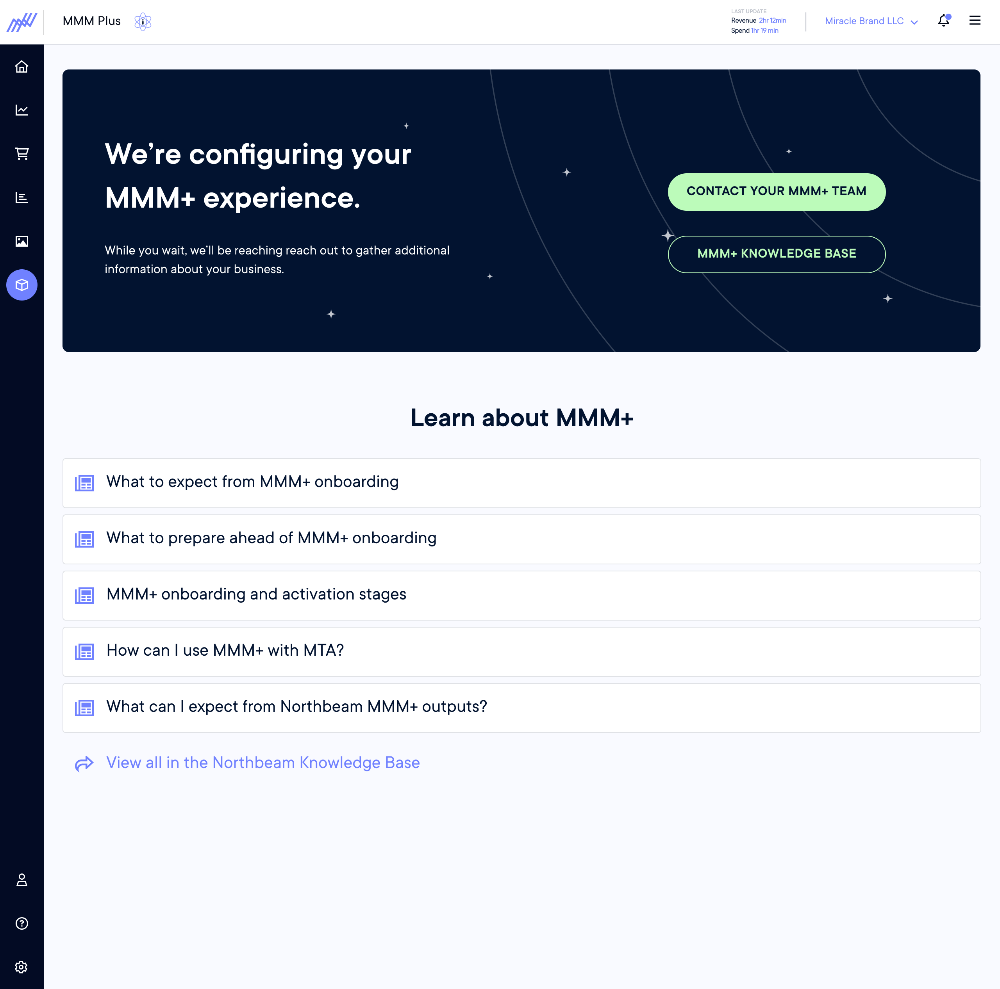
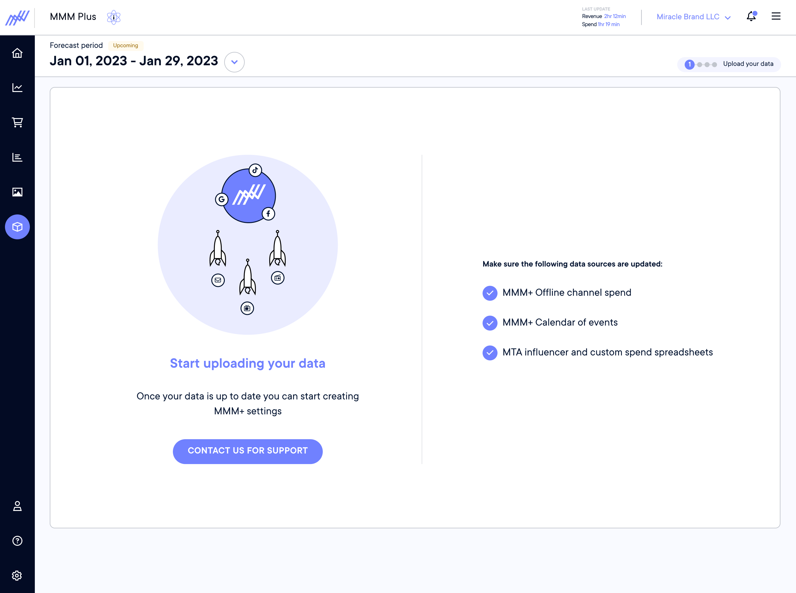
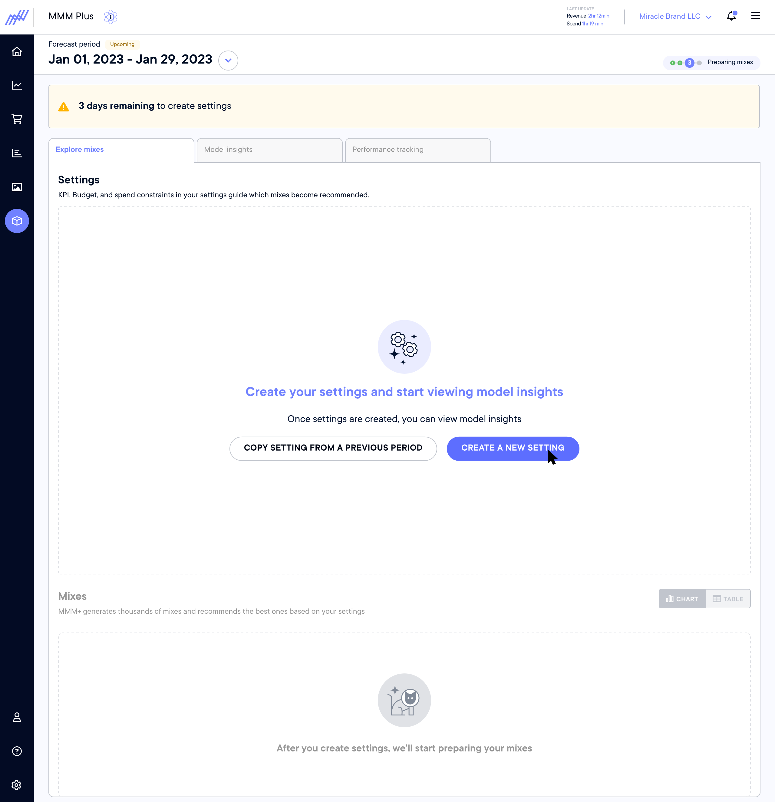
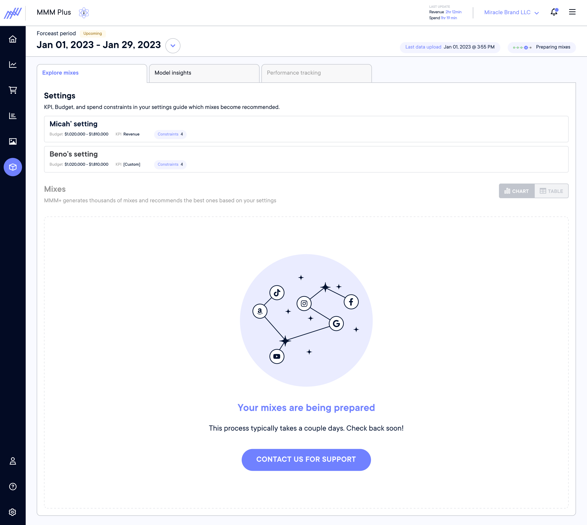
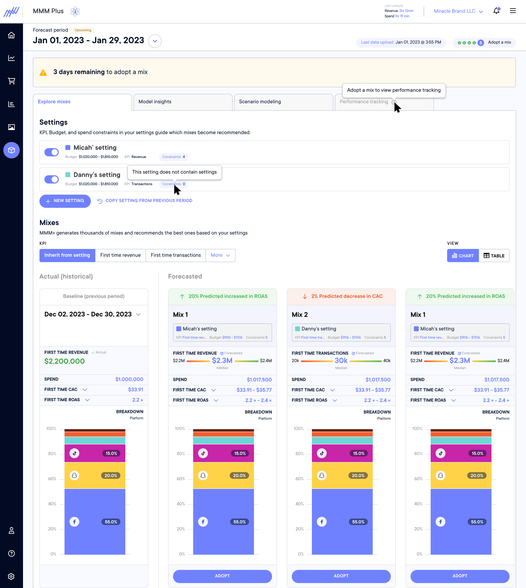
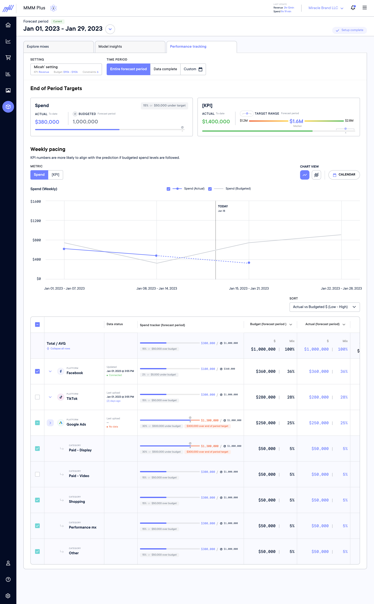

Most brands set their media mix one of two ways: a senior buyer makes a call based on intuition, or the company hires a data scientist to run monthly analysis. Both approaches are slow, expensive, and inaccessible to most of the people actually managing spend day to day. MMM+ was built to change that — giving brand owners, media buyers, and non-technical operators a way to manage their media mix with real data insights, without needing a statistician in the room.
Because MMM+ needed to serve a wide range of users — from hands-on media buyers to brand owners with no statistical background — I started with research across all three personas before touching any interface decisions.
In MMM+, what the user sees depends entirely on where they are in their modelling cycle — typically one to two weeks in length. Designing for key moments in the cycle created a coherent experience rather than a collection of disconnected screens.
The user's account does not include MMM+. The surface communicates the value of the product and provides a clear path to upgrade.

MMM+ has been enabled but no modelling cycle has started yet. The experience orients the user, sets expectations for what's coming, and prompts them to begin setup.

The user provides the inputs the model needs to run — spend data, channel selection, and time window. Designed to feel guided rather than form-like.

Returning users can carry forward settings from a previous cycle, reducing friction for repeat use. New users start from scratch with guided defaults.

The model is running. The user is in a waiting state — the design maintains engagement, communicates progress, and sets expectations for when results will be ready.

The model has returned media mix scenarios for the user to review. The user compares options and selects a mix to run for the upcoming cycle.

The cycle is live. The user monitors spend pacing and performance against the adopted mix, with visibility into how actuals are tracking against the model's projections.

MMM+ has an inherently time-based user experience — and that sequencing created a significant design problem. Before a user can see any media mix scenarios, they first have to configure a model: defining the time window, selecting channels, and setting budget constraints. Only once those settings are locked can the model run, and only after the model runs can results be surfaced.
For a technical user, this pipeline is intuitive. For a brand owner or media buyer who just wants to know where to put their money next quarter, it's a wall. A large part of the design work was breaking this sequence into stages that felt like natural progress rather than prerequisite gates — communicating what was happening, why each step mattered, and what the user would get on the other side. The goal was to make the model feel like a tool working for the user, not a process the user had to feed.
As the lead designer on MMM+, I was responsible for translating a technically complex statistical product into a clear, actionable interface for marketing and finance personas. This meant working closely with data science to understand model outputs, and with customers to understand how they actually made budget decisions — then designing a tool that bridged those two worlds.